Para quien vende los espacios del supermercado, lleva los contratos con los proveedores, revisa que lo contratado quede armado en la tienda y mira cómo va la sede. Todo se hace en el computador.
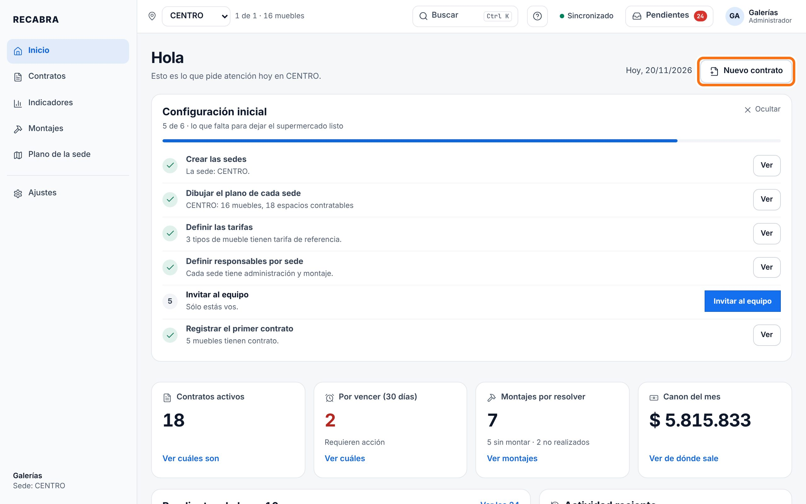
Versión
{{VERSION}} · {{FECHA}}
Sistema
{{APP}}
Equipo
Computador con internet (pantalla de 1280 × 800 o más grande)
Tiempo de lectura
2 horas (capítulos 1 a 6: 1 hora)
Datos de ejemplo
Todas las pantallas son de una sede de prueba («CENTRO»). Proveedores, marcas, correos y personas son inventados.
1Antes de empezar
RECABRA es el sistema donde el supermercado lleva los espacios que le alquila a los proveedores: las puntas de góndola, los entrepaños, un porcentaje de una cara, una nevera. Qué se vendió, a quién, por cuánto y hasta cuándo, y si quedó armado en la tienda.
Lo que hace el administrador
Todos los días
Revisás el Inicio y la bandeja de Pendientes: lo que vence, lo que caduca, lo que falta montar.
Cuando un proveedor compra
Vendés el espacio en Contratos: fechas, espacio, proveedor, precio. El sistema le avisa al proveedor, al área comercial y a quien monta.
Cuando cambia algo
Desde la ficha del espacio: editás, renovás, cancelás o cargás la planometría.
Cuando arman en la tienda
En Montajes comparás la foto con lo pedido y decís si coincide.
Para saber cómo va
En Indicadores: ocupación, ingreso, quién paga, historial, todo exportable.
Cuando cambia la tienda
El Plano de la sede, los planogramas de las góndolas de la casa y los Ajustes (capítulos 7, 8 y 9).
Lo que NO hacés vos
Invitar personas al equipo, la suscripción y la cuenta del supermercado son del dueño de la cuenta: si hace falta, avisale al dueño de la cuenta. Si algo del sistema no anda, escribile a soporte de RECABRA.
1.1 Entrar a RECABRA
Cuándo: al empezar el día. Si no cerraste sesión, entrás directo.
Abrí la dirección de RECABRA en el navegador y tocá Ya tengo cuenta.
Se abre la hoja de ingreso a la derecha. Entrá con Google o con tu correo y contraseña, los mismos con los que te invitaron. Si estás en más de un supermercado, elegí en cuál vas a trabajar.
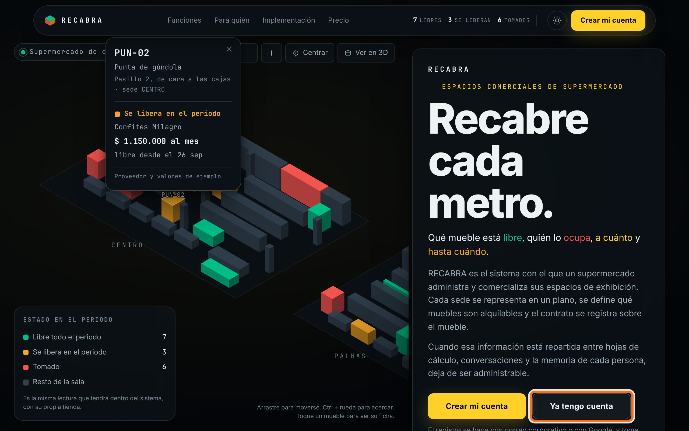
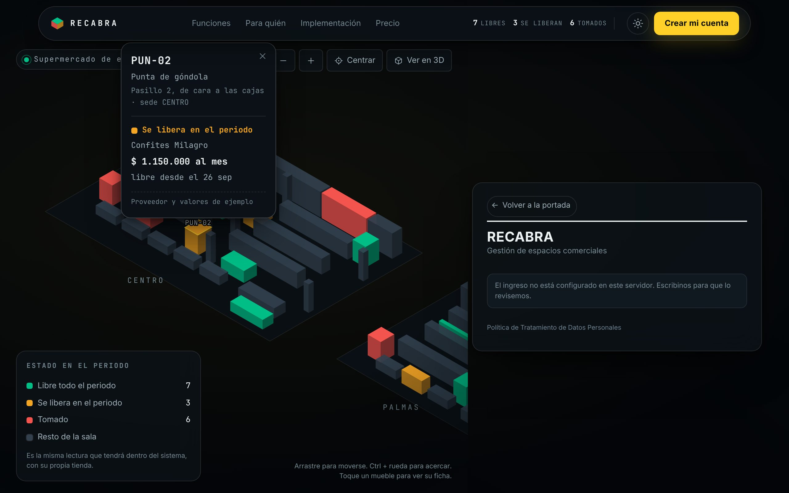
En la copia de práctica
La captura es de la copia de prueba de la capacitación: ahí la hoja dice El ingreso no está configurado en este servidor. Escribinos para que lo revisemos. En la RECABRA de verdad aparecen los botones de Google y de correo. Si te pasa en la de verdad, escribile a soporte de RECABRA.
No podés entrar
Te olvidaste la contraseña: en la hoja de ingreso, Olvidé mi contraseña.
Entrás pero no ves la sede o te falta un permiso: avisale al dueño de la cuenta (es quien te invita y te da el rol).
1.2 La pantalla y la barra de arriba
Cuándo: la primera vez. Es igual en todos los módulos.
A la izquierda está el menú de módulos: Inicio, Contratos, Indicadores, Montajes, Plano de la sede y Ajustes. Abajo dice el supermercado y la sede en la que estás.
Arriba está la barra, con siete cosas:
1
Sede. Elegís con qué sede trabajás. Al lado dice cuántas hay y cuántos muebles tiene el plano.
2
Buscar (o Ctrl K): encuentra cualquier función por su nombre.
3
Más: lo raro o poco usado de ese módulo. Sólo aparece en Contratos, Indicadores y el Plano.
4
? Ayuda: qué hace la pantalla y qué quiere decir cada palabra.
5
Sincronizado: lo tuyo está guardado en el servidor. Si dice Sin conexión, mirá el capítulo 10.
6
Pendientes, con el número rojo de cosas por resolver (capítulo 2). Es la misma cuenta en todos los módulos.
7
Tu cuenta: el rol, el tema claro u oscuro y Cerrar sesión.
1.3 Buscar una función, «Más» y la ayuda
Cuándo: cuando no sabés dónde está algo.
Tocá Buscar o apretá Ctrl K y escribí lo que buscás, como lo dirías vos: «planilla», «reno», «excel», o el código de un espacio. Podés escribir apenas lo abrís. Elegí con las flechas y abrí con Enter. Abajo está Ver el mapa de todas las funciones.
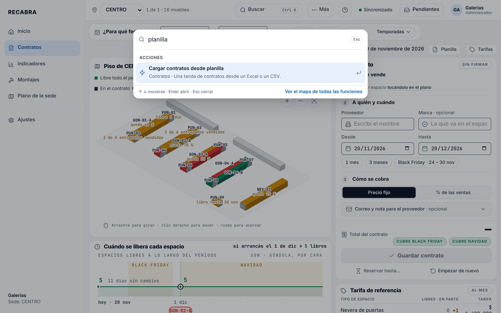
Más muestra las funciones de ese módulo que no están a la vista. Con el alfiler fijás hasta 3 en tu barra: Fijá hasta 3 en tu barra. Sólo cambia lo que ves vos.
? abre la ayuda de la pantalla en la que estás, con los términos que aparecen en ella.
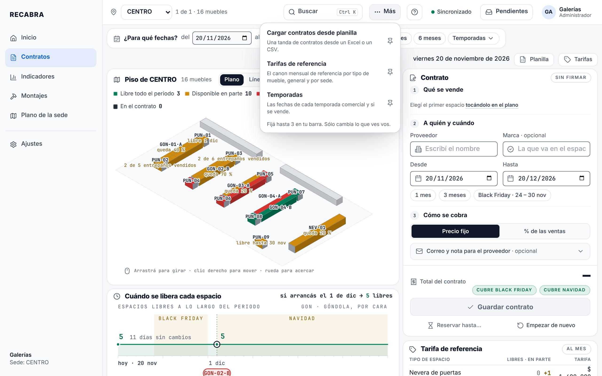
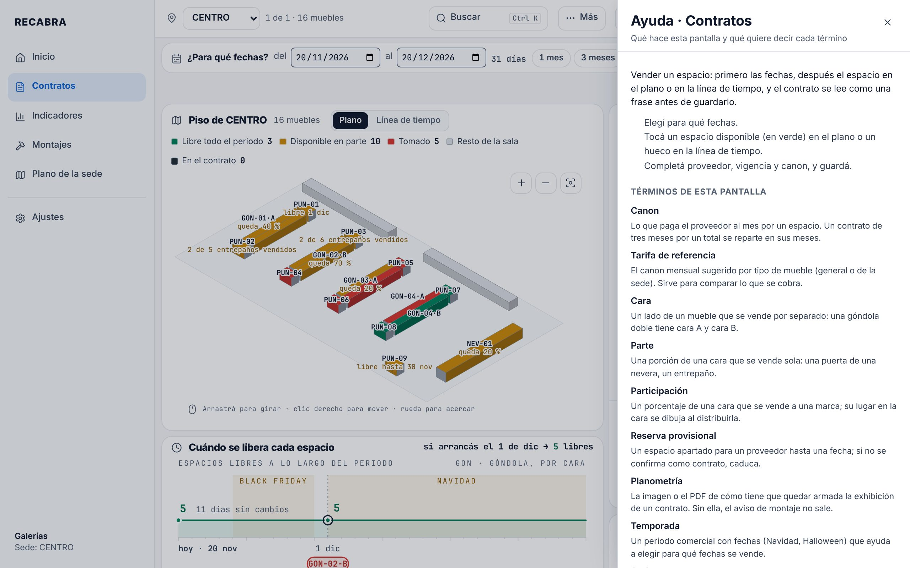
En tu cuenta (arriba a la derecha) está Tema claro u oscuro y Cerrar sesión. Cerrá sesión si el computador es compartido.
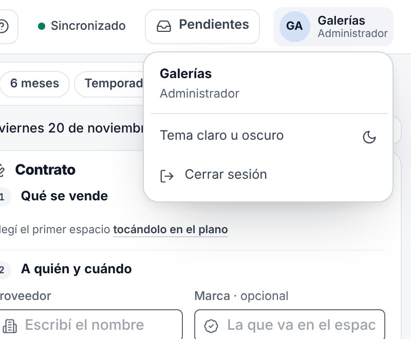
2Todos los días: Inicio y Pendientes
El Inicio te dice qué pide atención hoy en la sede. Pendientes es la lista de lo que hay que resolver, ordenada por urgencia, y cada fila trae el botón que lo resuelve.
2.1 Mirar el Inicio
Cuándo: al empezar el día.
El primer ingreso del día, si hay algo con fecha límite hoy, Pendientes se abre solo a la derecha. Cerralo con la X cuando lo hayas leído; lo volvés a abrir desde la barra.
En el Inicio, arriba, está Configuración inicial: los seis pasos para dejar el supermercado listo. Si todos tienen el visto bueno, tocá Ocultar. El botón Nuevo contrato te lleva a vender.
Las cuatro tarjetas: Contratos activos, Por vencer (30 días), Montajes por resolver y Canon del mes. Cada una tiene su enlace (Ver cuáles, Ver montajes, Ver de dónde sale…) que te lleva al detalle. Montajes por resolver dice el desglose (5 sin montar · 2 no realizados): lo que ya empezó y nadie reportó montado, más lo que no se pudo montar. Es la misma cuenta del filtro de Montajes, sin lo que todavía no empieza.
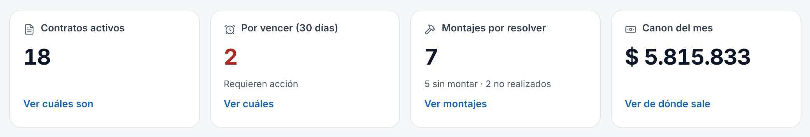
Más abajo, Pendientes de hoy con un botón por fila (Resolver, Verificar, Cargar, Distribuir) y, al lado, la Actividad reciente de la sede.
«Invitar al equipo»
Es un paso del dueño de la cuenta. Si falta gente en RECABRA, avisale al dueño de la cuenta.
2.2 La bandeja de Pendientes
Cuándo: todos los días, y cada vez que el número rojo de Pendientes sube.
Tocá Pendientes en la barra. Arriba hay tres grupos, cada uno con su cantidad: Hoy (fecha límite hoy o ya pasada), 30 días (lo que viene) y Corregir (lo que no cuadra).
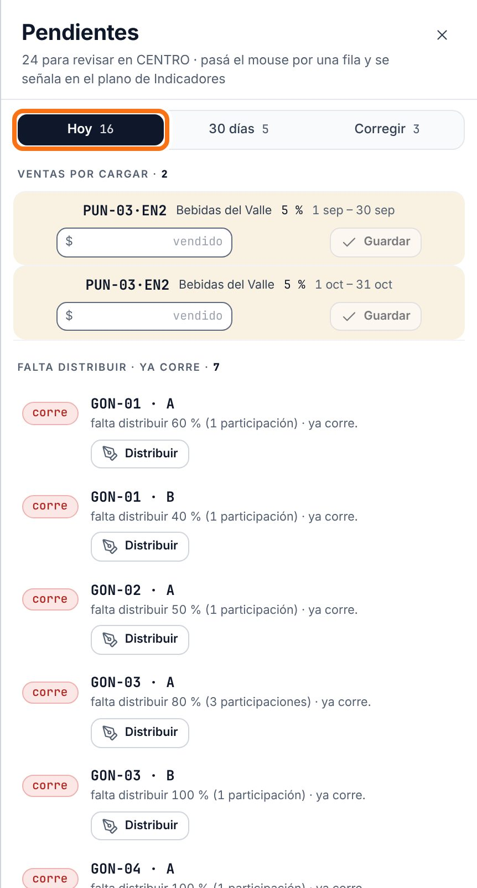
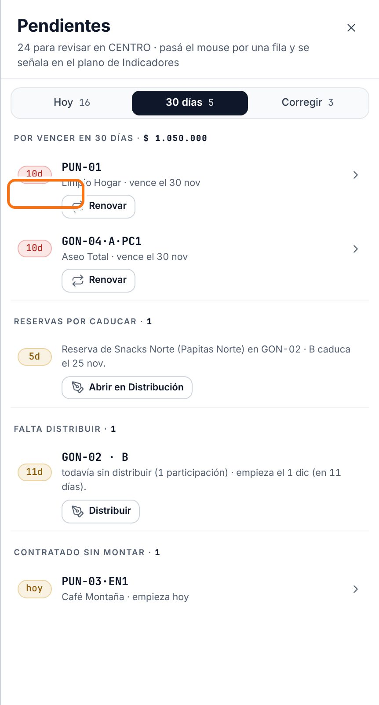
Cada fila trae el espacio, el proveedor, cuántos días faltan (o hoy; corre si el contrato ya empezó) y el botón que lo resuelve. Al resolverlo, sale de la lista. Los títulos dicen si es urgente: Falta distribuir · ya corre (el contrato ya empezó) o empieza en 7 días o menos.
En Montaje sin reporte y Contratado sin montar, tocá Ir a Montajes: se abre Montajes con esa fila marcada, para registrar el montaje o averiguar qué pasó.
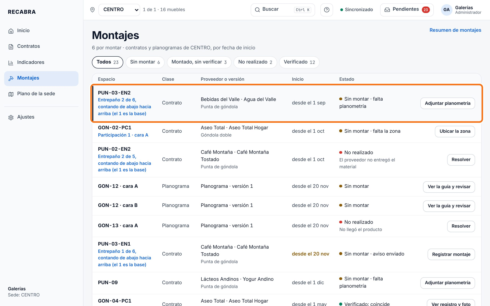
Si abriste Pendientes desde otro módulo
Pendientes se abre sobre el Inicio. Si venías del Plano o de Montajes, arriba dice Viniste desde Plano de la sede: al cerrar Pendientes volvés ahí., con el botón Volver a Plano de la sede. Al cerrar la bandeja volvés a donde estabas.
Qué es cada pendiente y cómo se resuelve
Lo que dice
Qué hacés
Reservas que caducan hoy
Confirmar si el proveedor firmó; Cancelar si no (2.4).
Por vencer en 30 días
Renovar: abre un contrato nuevo con los mismos datos (2.5). Si no se renueva, no hagas nada: el espacio se libera solo el día que vence.
Ventas por cargar
Escribí lo que vendió el proveedor en ese período y Guardar (2.3).
Falta planometría
Cargar planometría: abre la ficha del espacio para subirla (4.4). Sin ella no sale el aviso de montaje.
No se pudo montar
Tocá la fila: ves el motivo. Se resuelve en Montajes (6.3).
Contratado sin montar
Arrancó y nadie reportó el montaje. Ir a Montajes; si hace falta, registralo vos (6.4).
Falta distribuir, Reservas por caducar de una participación
Distribuir / Abrir en Distribución: dibujar dónde va cada porcentaje en la cara (capítulo 7).
Planograma sin montar, montado por revisar, No se pudo montar el planograma
Mandar la guía, Revisar o Ver (capítulo 8).
Bajo tarifa de referencia (en Corregir)
El contrato cobra menos que la tarifa. Si fue un error, Editar contrato (4.2); si fue un precio acordado, dejalo.
Montaje sin reporte (en Corregir)
Arrancó hace más de 30 días y nadie reportó. Ir a Montajes, averiguá con quien monta y registralo (6.4). Editar contrato es por si el contrato estaba mal cargado.
Contrato sin mueble en el plano / Contrato que sólo vive en el plano (en Corregir)
El plano y los contratos no coinciden. Se resuelve con el botón de la tarjeta; si no estás seguro, avisale a quien dibuja el plano antes de tocar.
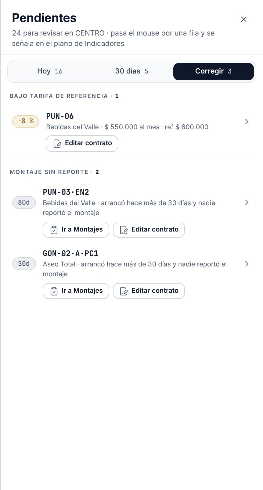
2.3 Cargar las ventas de un contrato por porcentaje
Cuándo: cuando termina el período de un contrato que se cobra por % de las ventas (sale en Ventas por cargar).
En la fila del período (por ejemplo PUN-03·EN2 · Bebidas del Valle · 5 % · 1 sep – 30 sep) escribí en vendido lo que vendió el proveedor ese mes, en pesos. Al lado aparece lo que le toca pagar (el 5 %).
Tocá Guardar.
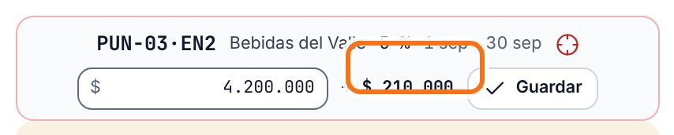
Si te equivocás
Escribí el número sin puntos: RECABRA los pone solo. Revisá lo que dice al lado antes de guardar; si la cifra está mal, avisale al área comercial antes de facturar.
2.4 Confirmar o cancelar una reserva
Cuándo: el día que caduca una reserva provisional (Reservas que caducan hoy). Si no hacés nada, la reserva se libera sola.
Si el proveedor confirmó, tocá Confirmar (1): la reserva pasa a ser contrato. Si no, tocá Cancelar (2) y el espacio queda libre.
Al confirmar, arriba de la bandeja dice que pasó a contrato y a quiénes les llegó el aviso. La reserva sale de la lista.
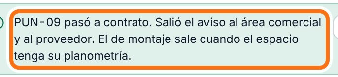
Los avisos salen al confirmar
Confirmar manda los mismos correos que vender: la Confirmación al proveedor y 1 contrato nuevo — CENTRO al área comercial. Si dice El proveedor no tiene correo: avisale vos., contale vos que quedó en firme. Para que salga el de montaje, cargá la planometría (4.4). La misma reserva tiene Confirmar y Cancelar en la ficha del espacio (3.8).
2.5 Renovar lo que vence
Cuándo: en los 30 días antes de que venza un contrato (grupo 30 días). El sistema también le avisa al área comercial por correo.
En 30 días, en Por vencer en 30 días, tocá Renovar en el contrato.
Se abre Contratos con el contrato nuevo ya armado: mismo espacio, proveedor y marca, y los mismos meses que el anterior, desde el día siguiente al vencimiento. En el ejemplo, PUN-01 iba del 1 jun al 30 nov (6 meses): la renovación va del 1 dic (1) al 31 may (2), otros 6 meses.
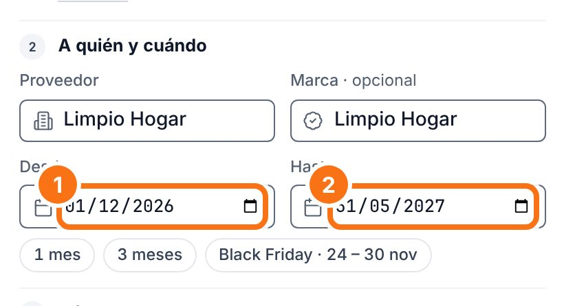
Abajo, leé la frase: Limpio Hogar contrata PUN-01 del 1 dic 2026 al 31 may 2027 por $ 3.600.000 en total. El valor es el de antes por mes (6 × $ 600.000). Si cambió el precio o el plazo, corregilo acá. Tocá Guardar contrato y seguí como en 3.4.
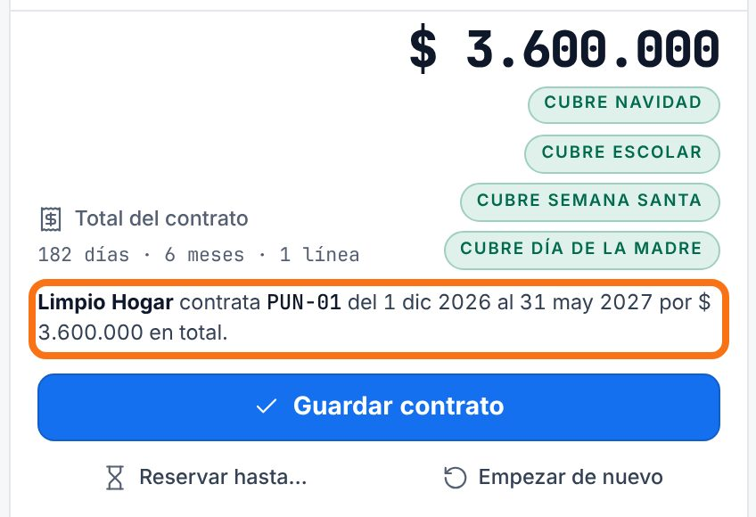
Otro plazo
Si el proveedor renueva por otro plazo, cambiá el Hasta o usá los atajos 1 mes y 3 meses, y mirá que el total de abajo sea el acordado.
Después de renovar
La renovación es un contrato nuevo: pide su propia planometría (sale en Pendientes como Falta planometría). El contrato que vence sigue en Por vencer en 30 días, con Renovar, hasta su fecha: no lo renueves dos veces.
3Vender un espacio (Contratos)
Vender tiene un orden: primero las fechas que pide el proveedor, después el espacio en el plano, y al final el contrato en tres bloques: Qué se vende, A quién y cuándo y Cómo se cobra. Antes de guardar, el contrato se lee como una frase.
3.1 Elegir las fechas
Cuándo: apenas el proveedor dice para cuándo lo quiere.
En ¿Para qué fechas? escribí del y al (1), o usá un atajo: 1 mes, 3 meses, 6 meses (2). Al lado dice cuántos días suman.
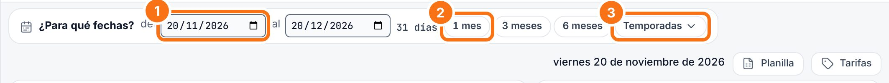
Con Temporadas (3) aparece la fila de temporadas con los días que faltan para cada una (Black Friday, Navidad, Escolar…). Tocá una y quedan sus fechas.
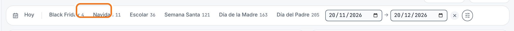
3.2 Leer el plano de la venta
Cuándo: después de elegir las fechas. El plano se pinta según esas fechas.
Los colores: verdeLibre todo el periodo, ámbarDisponible en parte (algunas fechas, algunos entrepaños o un porcentaje), rojoTomado, grisResto de la sala (no se vende) y negroEn el contrato (lo que ya elegiste). Debajo de cada código dice qué queda: libre 1 dic, queda 40 %, 2 de 5 entrepaños vendidos.
Mover el plano
Arrastrá para girarlo, clic derecho para moverlo, rueda para acercar. Los botones +− y el de centrar están arriba a la derecha.
3.3 Vender un espacio entero
Cuándo: el proveedor quiere un mueble completo (por ejemplo, una punta de góndola).
Tocá el espacio en el plano (en el ejemplo, PUN-07, en verde; los colores, en 3.2). Queda en negro y aparece en Qué se vende, a la derecha.
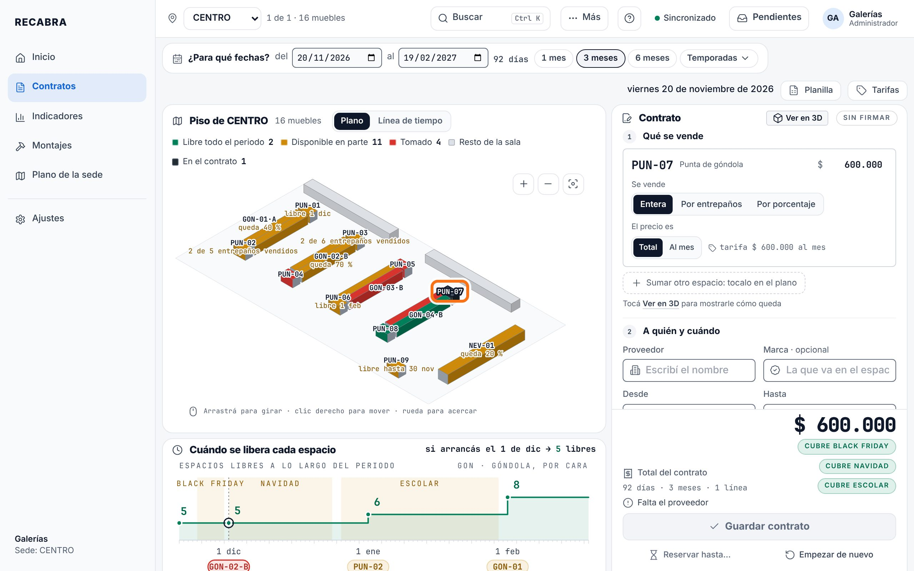
En Se vende dejá Entera (1). El precio ya viene puesto con la tarifa de referencia, que es mensual: El precio es arranca en Al mes (2) y abajo dice la cuenta (3): tarifa al mes × 3 meses = $ 1.800.000. El total del contrato es la tarifa por los meses. Si acordaste otro precio al mes, escribilo encima.
En Proveedor empezá a escribir: si ya existe, aparece el nombre completo en gris; apretá Tab para aceptarlo.
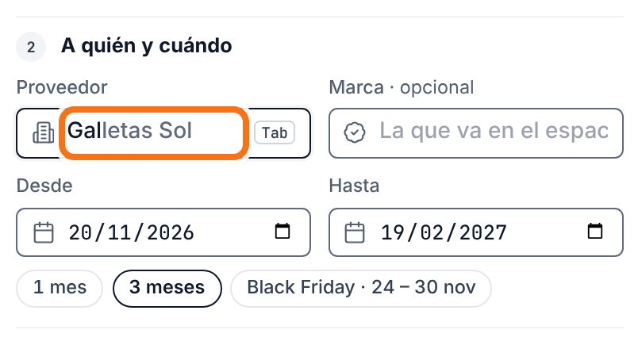
Escribí la Marca (opcional) que va en el espacio. Desde y Hasta ya vienen con las fechas que elegiste; si cambian, corregilas acá.
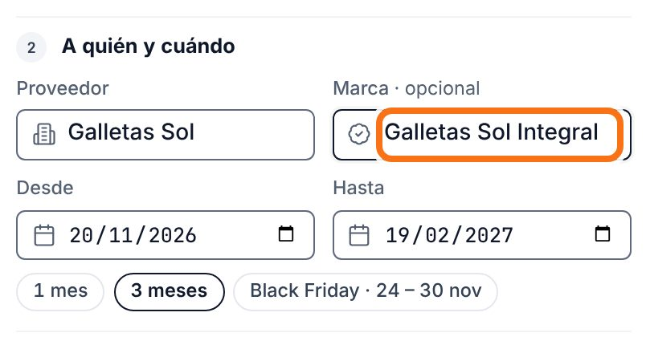
En Cómo se cobra dejá Precio fijo. Abrí Correo y nota para el proveedor y escribí el correo del proveedor (1) y, si hace falta, una nota (2). Abajo dice a quién se avisa al guardar.
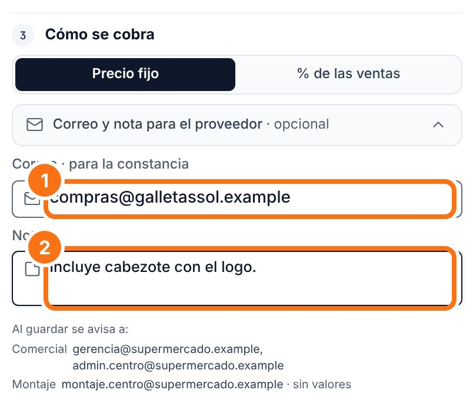
Leé la frase de abajo (Galletas Sol contrata PUN-07 del 20 nov 2026 al 19 feb 2027 por $ 1.800.000 en total.). Si está bien, tocá Guardar contrato.
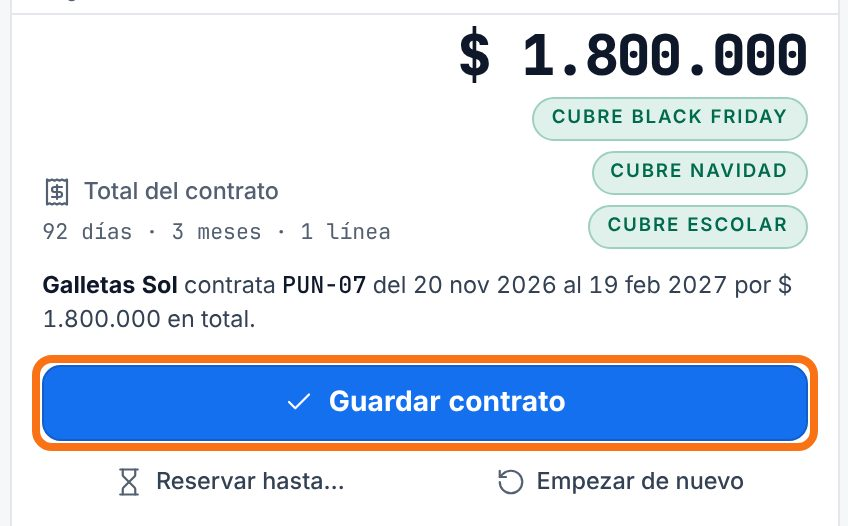
«Al mes» o «Total»
Dejá Al mes cuando el número que te dio el proveedor es de cada mes. Si te dio lo de todo el contrato, tocá Total y escribí ese número: RECABRA lo convierte. Si cambiaste el precio y querés volver al de lista, tocá Volver a la tarifa (queda en Al mes). Mirá siempre el Total del contrato antes de guardar.
Si falta algo
Mientras falte un dato, el botón está gris y dice qué falta (Falta el proveedor). Empezar de nuevo borra todo lo que llevás.
3.4 Qué pasa después de guardar
Aparece Contrato guardado con a quién salieron los avisos: Comercial (con el valor) y Proveedor. En Qué pasa ahora están los cuatro pasos que siguen: confirmación al proveedor, aviso de montaje, registro del montaje y verificación.
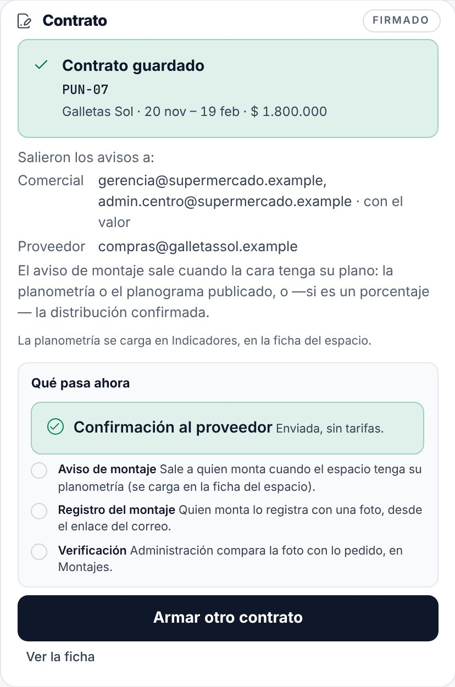
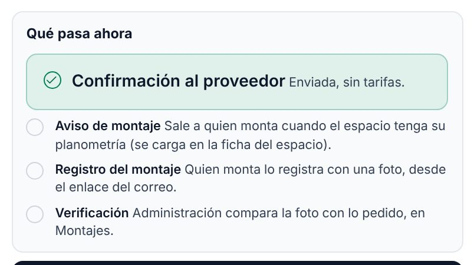
Al proveedor le llega la Confirmación: el espacio, las fechas y el valor acordado. No lleva la tarifa de referencia.
Al área comercial (gerencia y administración de la sede) le llega 1 contrato nuevo — CENTRO, con el valor.
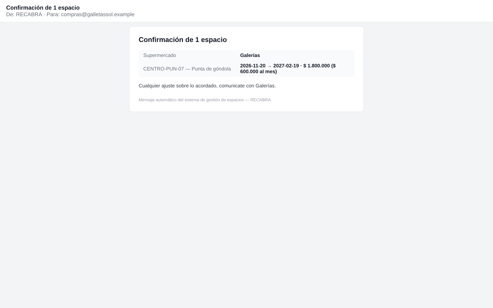
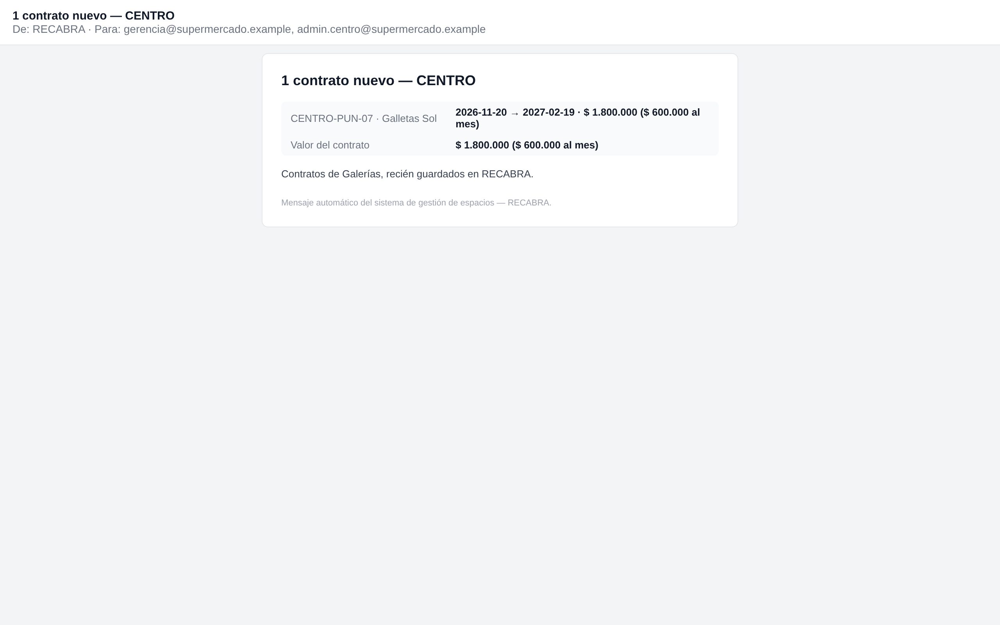
El aviso de montaje espera la planometría
A quien monta no le llega nada todavía: El aviso de montaje sale cuando la cara tenga su plano: la planometría o el planograma publicado, o —si es un porcentaje— la distribución confirmada. Pedile al proveedor la imagen de cómo debe quedar y cargala en la ficha (4.4).
3.5 Vender un entrepaño
Cuándo: el proveedor quiere un estante de una punta que se vende por entrepaños (en el plano dice 2 de 5 entrepaños vendidos).
Tocá la punta (en el ejemplo, PUN-02) y elegí Por entrepaños (1). Aparecen los entrepaños de arriba hacia abajo, del EN5 · arriba al EN1 · la base, cada uno con Libre o Tomado. La base también se vende: por eso una punta con 4 estantes dibujados tiene 5 entrepaños.
Marcá el o los libres que vende (2). El precio sale de la tarifa por entrepaño, al mes (tarifa al mes × 3 meses = $ 360.000). Seguí desde el paso 3 de 3.3.
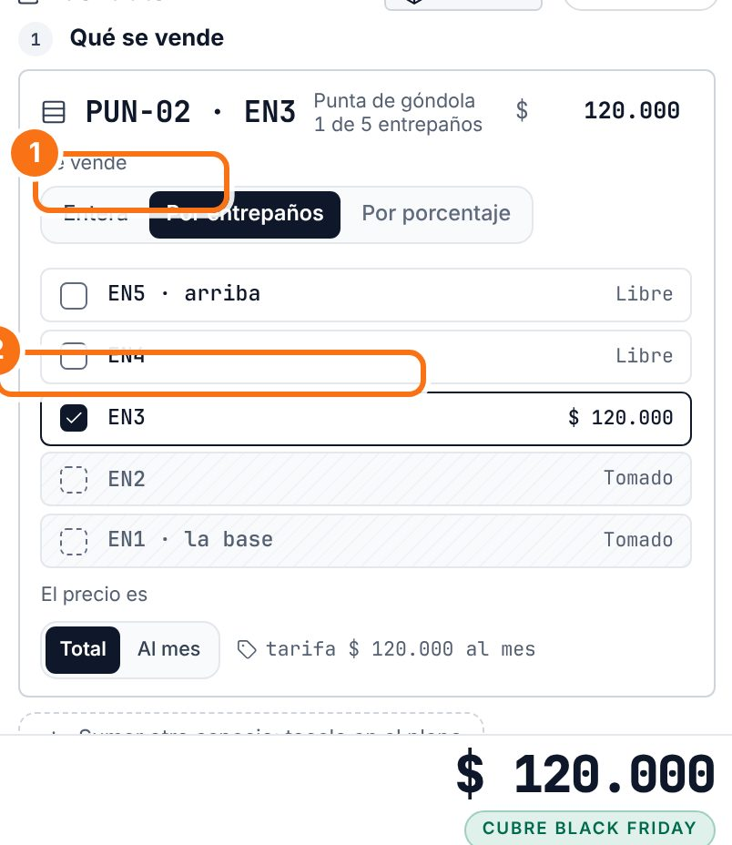
3.6 Vender un porcentaje de una cara
Cuándo: la cara se vende por participación (en el plano dice queda 40 % o por porcentaje).
Tocá la cara (en el ejemplo, GON-04·B). Arriba se elige la cara A o B. Con Por porcentaje elegí 10 %, 25 %, 50 %, Todo lo que queda · 100 % u otro número (1). La barra muestra lo de este contrato y lo que sigue libre.
El precio arranca en Al mes (2), proporcional a la tarifa de la cara: el 25 % de $ 450.000 es $ 112.500 al mes, y abajo dice tarifa al mes × 3 meses = $ 337.500. Seguí como en 3.3.
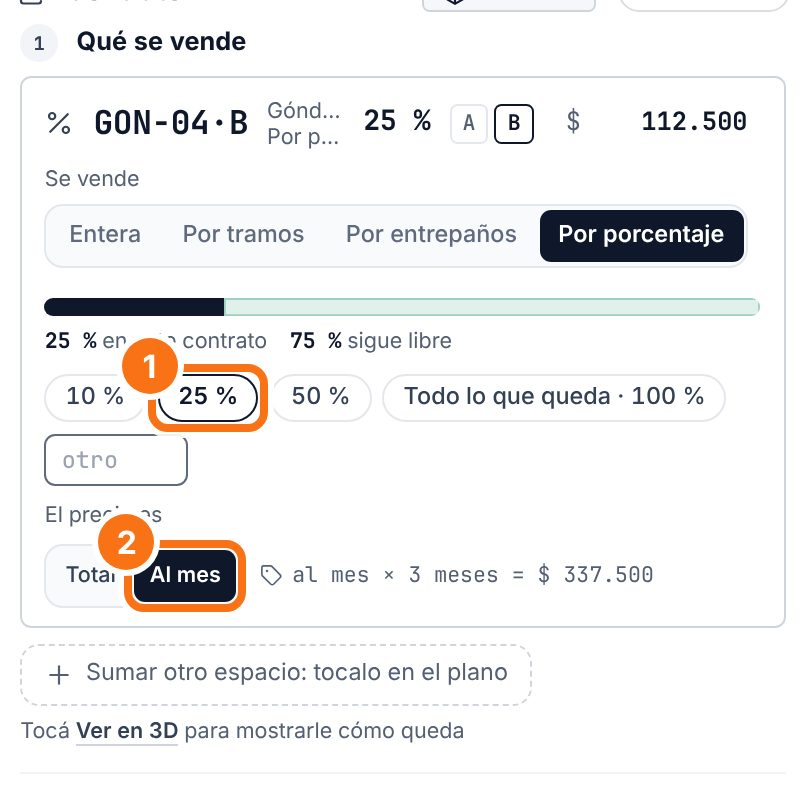
Después de vender un porcentaje
Hay que distribuir la cara: dibujar en qué parte va cada proveedor. Hasta que no se confirme la distribución, no sale el aviso de montaje (capítulo 7).
3.7 Cobrar por porcentaje de las ventas
Cuándo: el acuerdo no es un precio fijo sino un porcentaje de lo que venda el proveedor.
En Cómo se cobra tocá % de las ventas (1), escribí el porcentaje (2) y elegí el Corte: Cada mes o Al final (3). Abajo dice en qué fechas se calcula.
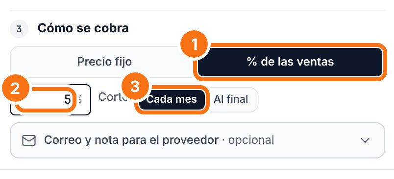
En cada corte te aparece Ventas por cargar en Pendientes (2.3).
3.8 Reservar hasta una fecha
Cuándo: el proveedor está interesado pero todavía no firmó, y no querés que otro tome el espacio mientras tanto.
Armá el contrato como siempre y, en lugar de guardar, tocá Reservar hasta…. Elegí hasta qué día se sostiene la reserva (1) y tocá Reservar hasta el … (2).
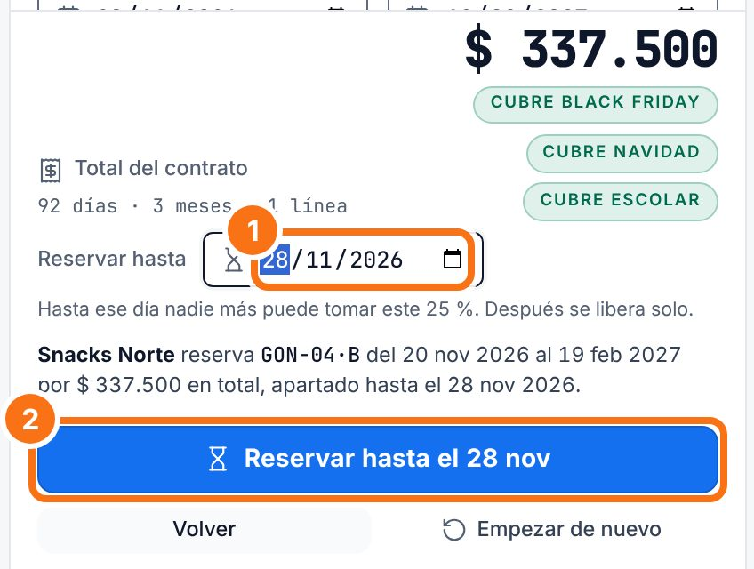
Queda Reservado hasta el …: Hasta ese día nadie más puede tomarlo. Después se libera solo, si no se confirma. Y abajo: Todavía no es un contrato: no salió ningún correo. Los avisos salen cuando se confirma.
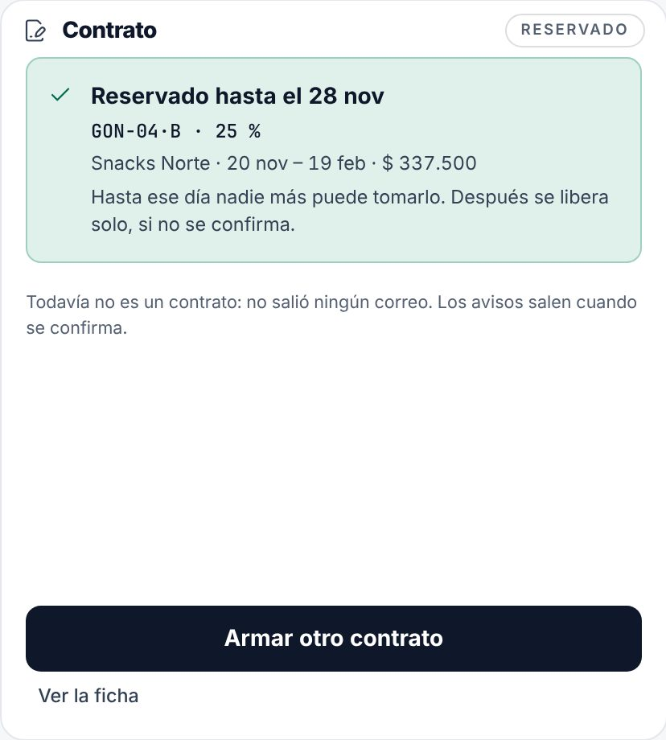
En la ficha (4.1) dice Reservado, con Confirmar y Cancelar, y la línea de tiempo dice Reservado hasta el …, sin confirmar. El día que caduca aparece en Pendientes (2.4).
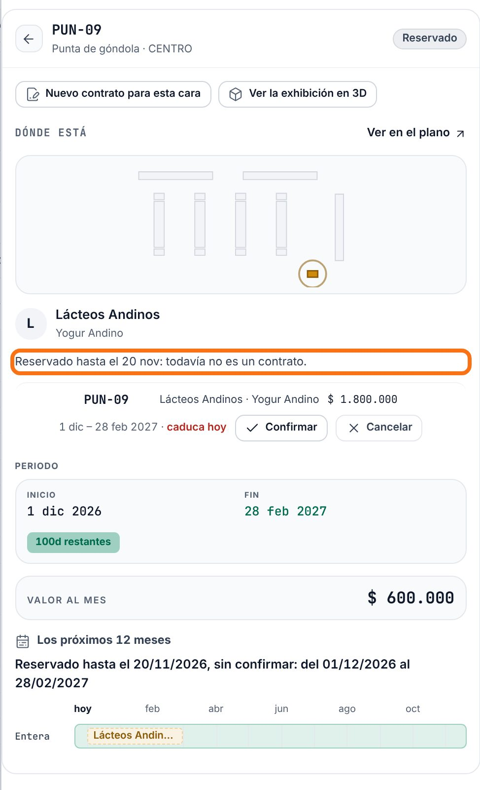
Para tener en cuenta
La reserva no puede terminar antes de hoy ni durar más que el contrato. Mientras sea reserva no sale ningún correo y no aparece en Montajes: a quien monta no le llega nada hasta que la confirmes. En el plano se ve como Reservado, no como ocupado.
3.9 Cuando el espacio está tomado
Cuándo: tocás un espacio que ya tiene contrato en parte de tus fechas.
Aparece en rojo, por ejemplo: «PUN-06» está tomado del 1 ago al 31 ene 2027: ajustá las fechas. No se puede guardar así.
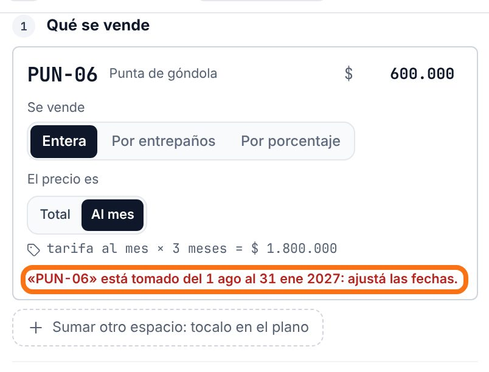
Cambiá las fechas para que empiecen después (en el ejemplo, desde el 1 de febrero), elegí otro espacio o, si es una punta por entrepaños, elegí un entrepaño libre.
3.10 La línea de tiempo y cuándo se libera cada espacio
Cuándo: el proveedor pregunta «¿qué tenés libre?» o «¿desde cuándo?».
Arriba del plano tocá Línea de tiempo: cada espacio en una fila y los próximos 12 meses. En rojo lo contratado, en ámbar punteado lo reservado y en azul tus fechas. Con Sólo los disponibles en tus fechas quedan sólo los que sirven. Plano vuelve al plano.
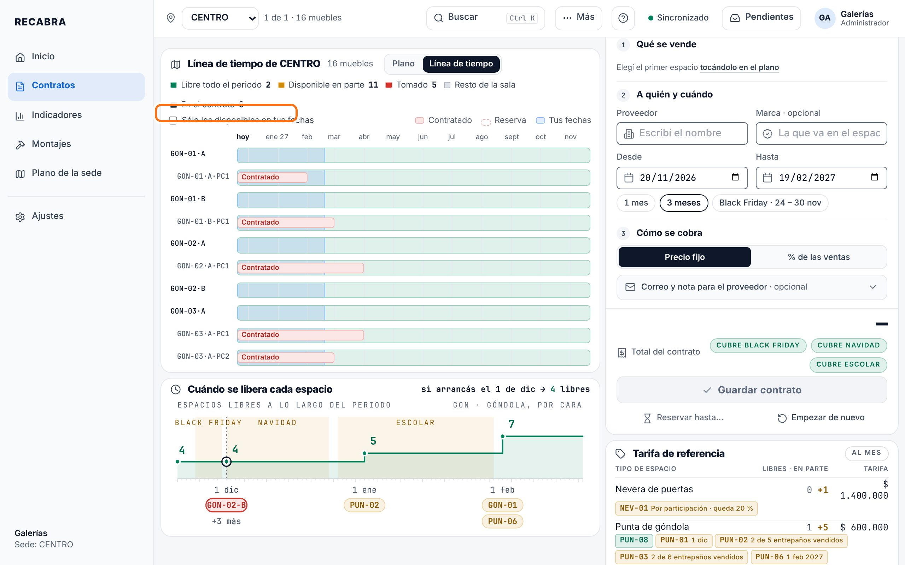
Debajo del plano, Cuándo se libera cada espacio cuenta cuántos espacios quedan libres desde cada fecha (si arrancás el 1 de dic → 4 libres), con las temporadas marcadas y los códigos que se liberan.
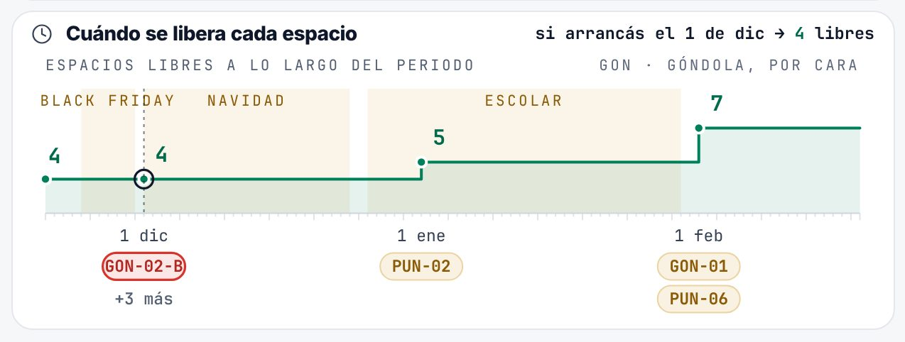
3.11 La tarifa de referencia y las tarifas
Cuándo: para saber cuánto pedir, y cuando cambian los precios del supermercado.
A la derecha, debajo del contrato, está Tarifa de referencia: por tipo de espacio, cuántos están libres y en parte, la tarifa al mes y los códigos de cada tipo con lo que les queda.
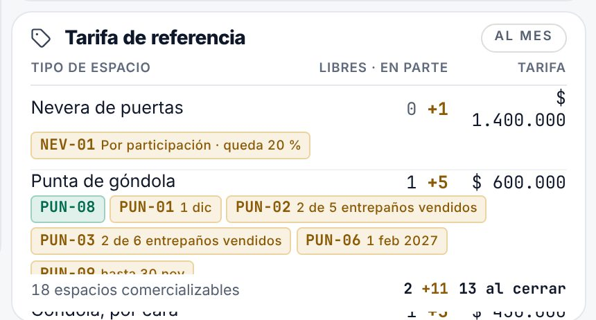
Para cambiar las tarifas, tocá Tarifas (arriba a la derecha). La columna General vale para todas las sedes; la de la sede la ajusta sólo ahí. Se guardan solas; un campo vacío quita la tarifa.
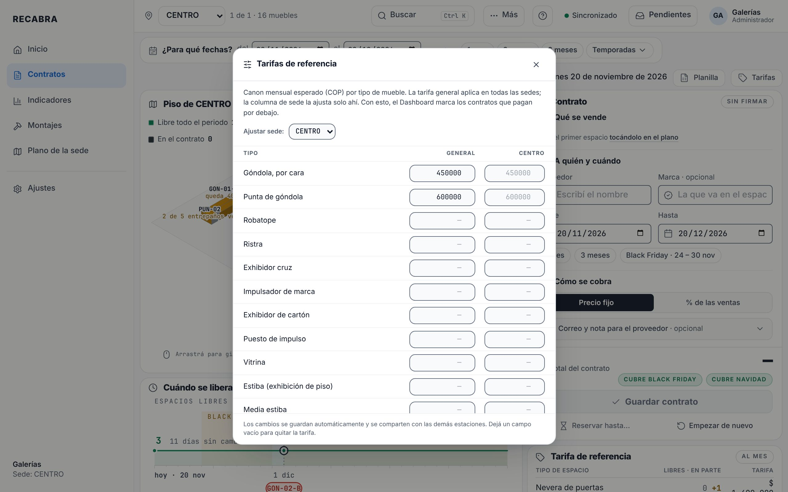
Cambia para todos
Las tarifas se comparten con todo el equipo y cambian lo que marca Bajo tarifa de referencia y los Indicadores. Cambialas sólo si te lo pidió el área comercial.
3.12 Cargar contratos desde una planilla
Cuándo: tenés muchos contratos en un Excel (por ejemplo, al empezar con RECABRA). Sólo sirve para muebles que se venden enteros: entrepaños, porcentajes y contratos por % de las ventas se venden uno por uno (3.5 a 3.7).
Tocá Planilla. Primero tocá Descargar la plantilla: trae las columnas y, en la segunda pestaña, las instrucciones.
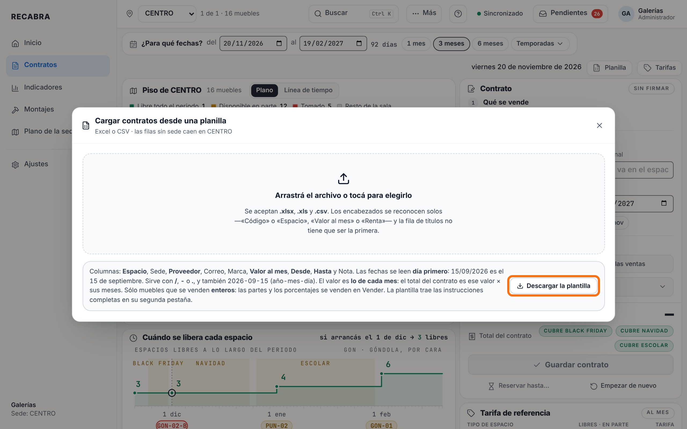
Llená una fila por contrato: Espacio, Sede, Proveedor, Correo, Marca, Valor al mes, Desde, Hasta y Nota. Las fechas se escriben con el día primero (15/09/2026). El valor es el de cada mes.
Arrastrá el archivo (.xlsx, .xls o .csv) al recuadro o tocalo para elegirlo. RECABRA muestra cada fila revisada: el valor al mes × los meses = el total, con Lista o No entra y el porqué (en el ejemplo, «CENTRO-PUN-05» ya tiene un contrato del 2026-10-01 al 2027-03-31. Cancelalo primero o ajustá las fechas.). Desmarcá las que no quieras.
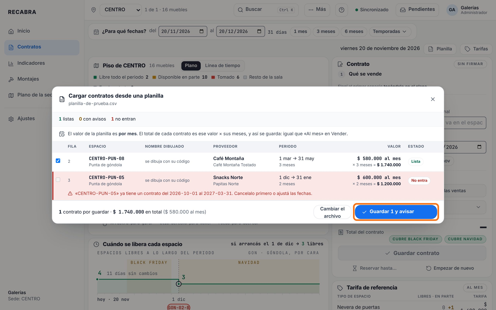
Tocá Guardar 1 y avisar (el número es el de filas marcadas). Al final dice cuántos se guardaron, a quién se avisó y que el aviso de montaje espera la planometría. Volver al mapa cierra.
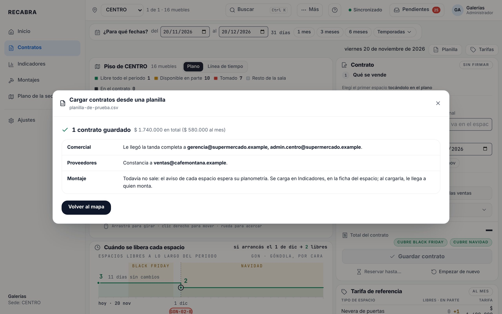
4Contratos ya firmados: la ficha del espacio
Cada espacio tiene una ficha con todo lo suyo: el contrato vivo, los anteriores, la planometría y los archivos. Desde ahí se edita, se renueva y se cancela.
4.1 Abrir la ficha
Cuándo: para mirar o cambiar un contrato.
Andá a Indicadores › Contratos y tocá la fila del espacio. (También se abre tocando el espacio en Indicadores › Plano, o desde una fila de Pendientes.)
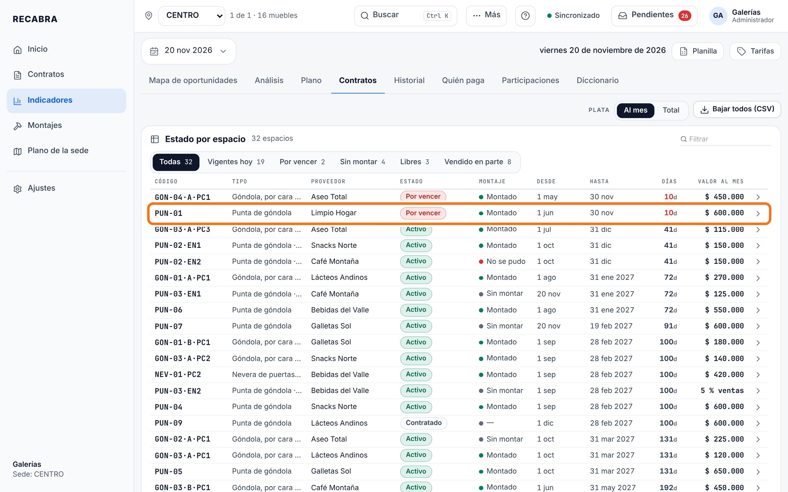
La ficha se abre a la derecha. Arriba: el código, el estado (Por vencer, Activo, Reservado, Libre) y los botones. Debajo: dónde está, el proveedor, el período, el valor al mes y el montaje.
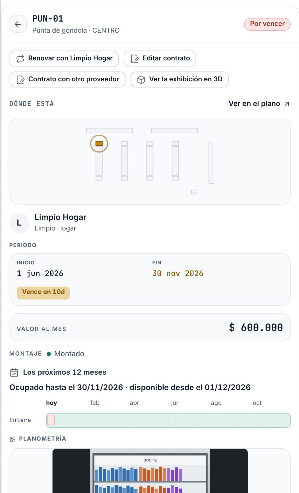
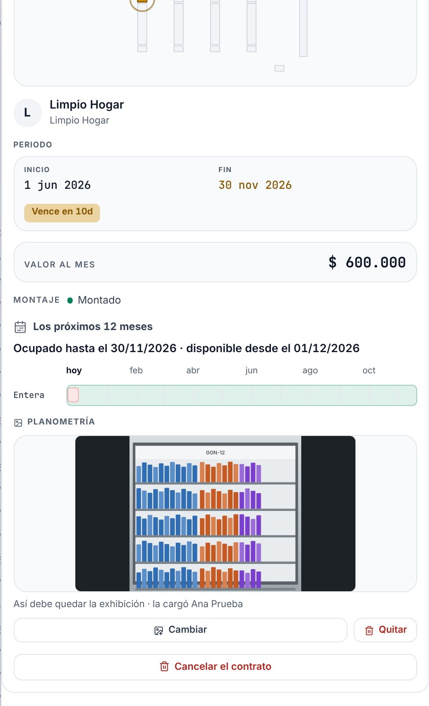
Más abajo: Los próximos 12 meses (Ocupado hasta el 30/11/2026 · disponible desde el 01/12/2026), la PLANOMETRÍA y, si el contrato tiene documentos, Archivos del contrato (las fotos de montaje no van ahí: se ven en Montajes). Al final, Cancelar el contrato.
4.2 Editar un contrato
Cuándo: cambió algo del acuerdo: las fechas, el precio, la marca, el correo.
En la ficha tocá Editar contrato. Se abre Contratos con Editando el contrato de PUN-01. Si te arrepentís, Salir sin cambios.
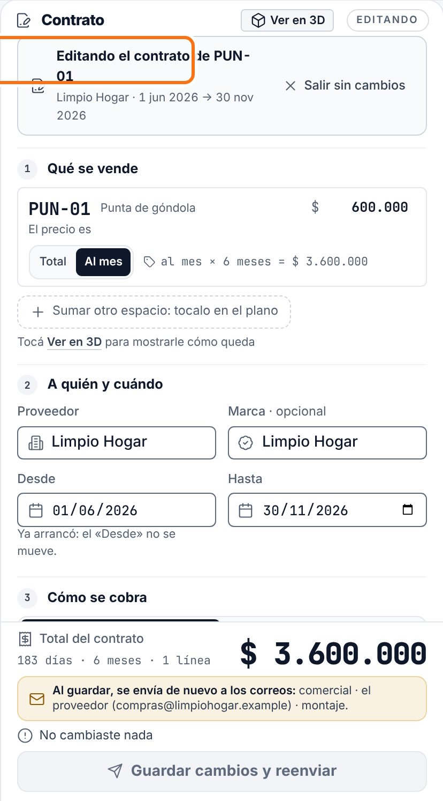
Cambiá lo que haga falta (en el ejemplo, el Hasta, un mes más). Si ya arrancó, Ya arrancó: el «Desde» no se mueve. Abajo dice Qué cambia. Tocá Guardar cambios y reenviar.
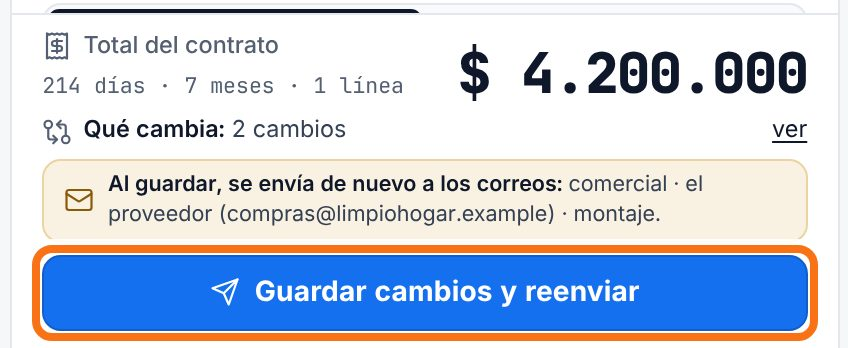
Te pregunta ¿Guardar los cambios y reenviar?, con a quién le llega (comercial, proveedor y montaje) y lo de antes tachado. Tocá Guardar y reenviar.
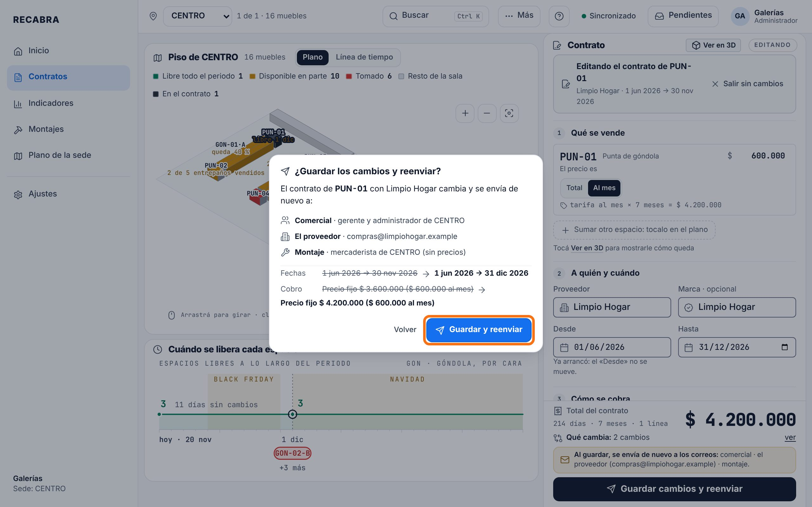
Listo cuando dice Cambios guardados y a quién salieron los avisos. Volver a Indicadores te deja donde estabas.
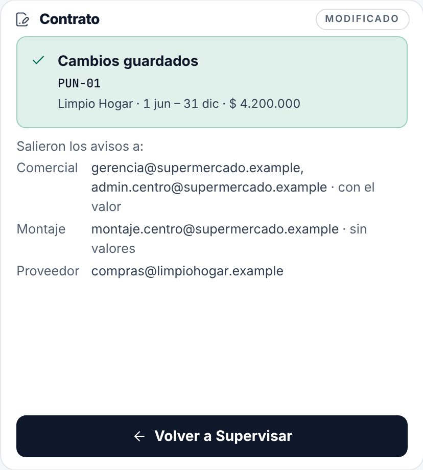
Le llega a todos otra vez
Guardar una edición reenvía el contrato al proveedor, al área comercial y a quien monta. Revisá antes de tocar Guardar y reenviar. El contrato anterior queda en el historial como Reemplazado al editarlo.
4.3 Renovar desde la ficha
Cuándo: el proveedor sigue. Es lo mismo que Renovar de Pendientes (2.5).
Tocá Renovar con … (el nombre del proveedor). Sólo aparece cuando el contrato está por vencer. Para darle el espacio a otro, Contrato con otro proveedor.
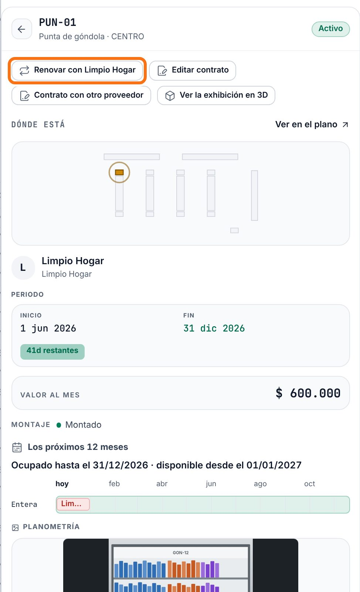
Se abre Contratos con el contrato nuevo armado: los mismos meses, desde el día siguiente al vencimiento. En el ejemplo, después de alargar PUN-01 hasta el 31 dic (7 meses), la renovación va del 1 ene al 31 jul 2027. Revisá Desde (1), Hasta (2) y el precio, y tocá Guardar contrato.
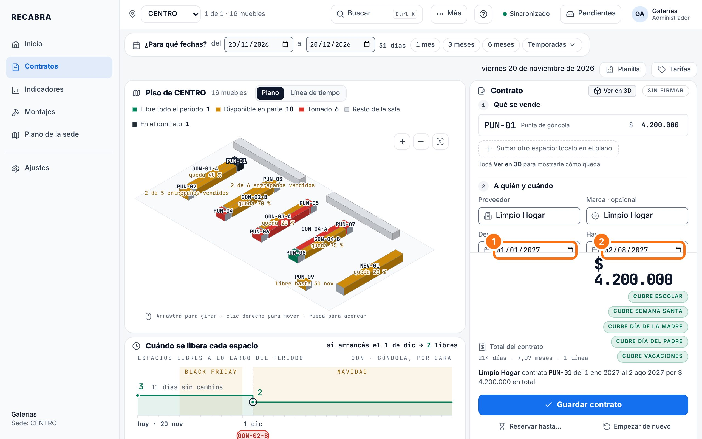
4.4 Cargar la planometría
Cuándo: el proveedor mandó la imagen (o el PDF) de cómo debe quedar la exhibición. Sin ella no sale el aviso de montaje.
En la ficha, en PLANOMETRÍA, tocá Adjuntar la planometría y elegí el archivo.
Aparece la imagen con Cambiar y Quitar, y el aviso Salió el aviso de montaje a … (el responsable de montaje de la sede).
A quien monta le llega 1 espacio por montar — CENTRO, con el enlace Ver dónde queda y confirmar. No lleva valores.
4.5 Los contratos anteriores
Cuándo: para saber quién tuvo el espacio y a cuánto.
En la ficha, debajo de Los próximos 12 meses, está Contratos anteriores: proveedor, fechas, valor al mes y si se canceló. Si hay más de los que entran, aparece Ver todos (N), que abre el Historial con ese espacio (5.5).
4.6 Cancelar un contrato
Cuándo: el proveedor se retira o el contrato se cargó por error.
Al final de la ficha tocá Cancelar el contrato. Leé el aviso: El espacio queda libre y el contrato deja de contar en ocupación e ingresos. La planometría y el reporte de montaje se quedan.
Si estás seguro, tocá Sí, cancelar (2). Si no, Dejarlo así (1).
No se puede deshacer
Un contrato cancelado no vuelve: queda en el Historial como Cancelado y, si hace falta, hay que venderlo de nuevo. Antes de cancelar, confirmalo con el área comercial.
5Indicadores
Cómo va la sede: cuánto está ocupado, cuánto entra, qué vence, quién paga. Arriba están las pestañas; la fecha y el período se eligen a la izquierda. La plata se ve siempre en cifras completas («$ 6.035.833»).
5.1 Mapa de oportunidades
Cuándo: para ver de un vistazo dónde está la plata que falta.
Arriba, Ocupación, Realización del potencial y Precio frente a tarifa contra su meta, y los Pendientes. En el centro, el Mapa de decisión: los espacios con algo urgente, numerados en el orden de la lista Acciones prioritarias de abajo (rojo prioridad alta, ámbar media).
5.2 Elegir la fecha o el período
Tocá la fecha (arriba a la izquierda): podés elegir Hoy, una temporada o escribir desde y hasta. Todas las pestañas se recalculan para esas fechas.
5.3 Análisis y Plano
Análisis: cinco cifras (ingreso mensual contratado, realización del potencial, ocupación, ingreso por vencer a 90 días, ejecución de montajes) con su enlace, y la tabla de Acciones prioritarias con el impacto en plata y el botón de cada una (Registrar ventas, Gestionar renovación…).
Plano: el plano de la sede pintado por estado (libre, vendido en parte, tomado) con Para revisar al lado. Tocá un espacio para abrir su ficha.
5.4 Contratos: la tabla de todos los espacios
Una fila por espacio: código, tipo, proveedor, estado, montaje, fechas, días que faltan y valor. Filtrá con los botones (Todos, Vigentes hoy, Por vencer (1), Sin montar, Libres, Vendido en parte; cada uno con su cantidad) o escribí en Filtrar (2). Bajar todos (CSV) (3) baja la tabla para Excel. PLATA: Al mes | Total cambia cómo se leen los valores.
5.5 Historial de contratos
Cuándo: para buscar contratos que ya no están vivos: terminados, cancelados o reemplazados al editarlos.
En Historial filtrá por Proveedor o marca, Espacio, Desde y Hasta. Con Exportar a Excel te llevás lo que está filtrado.
Los botones de Estado dejan ver sólo Terminado, Cancelado o Reemplazado al editarlo. Un cancelado que no empezó dice no llegó a correr y su Duró queda en «—»; uno cancelado a mitad dice corrió hasta el …. El espacio se ve con su código corto (PUN-08), también en el Excel.
5.6 Quién paga, Participaciones y Diccionario
Quién paga: los proveedores ordenados por lo que pagan al mes y su porcentaje del total. VENCE marca a los que tienen algo por vencer. Bajar (CSV).
Participaciones: cada cara que se vende por porcentaje, con lo comprometido el día, el pico del período, lo disponible y lo dibujado. Sin distribuir quiere decir que falta dibujar dónde va cada uno (capítulo 7).
Diccionario: de dónde sale cada cifra (fórmula, período, comparación, umbral y datos).
6Montajes
Lo contratado tiene que quedar armado en la tienda. Quien monta reporta con una foto desde el enlace del correo; vos comparás esa foto con la planometría y decís si coincide.
6.1 La lista de montajes
En Montajes está todo lo de la sede, contratos y planogramas, por fecha de inicio. Filtrá con Todos, Sin montar, Montado, sin verificar, No realizado y Verificado. Cada fila trae el botón de lo que toca: Adjuntar planometría, Ubicar la zona, Registrar montaje, Verificar montaje, Resolver.
Sin montar también lista lo que todavía no empieza; el Inicio no lo cuenta, porque no está atrasado. Las reservas no aparecen: entran a Montajes cuando las confirmás.
6.2 Verificar un montaje
Cuándo: quien monta reportó Lo monté (filtro Montado, sin verificar).
Tocá Verificar montaje en la fila.
A la izquierda está Lo pedido · planometría; a la derecha, Lo que quedó · foto del montaje. Comparalas y elegí Coincide (1) o No coincide (2).
Si no coincide, escribí en Qué hay que corregir lo que falta (1). Dejá marcado Mandar el aviso de montaje de nuevo a quien monta (2) y tocá Guardar la verificación (3).
Dice Quedó verificado: no coincide. El aviso de montaje salió de nuevo con lo que hay que corregir. Quien monta lo ve al abrir su enlace. Abajo aparece el siguiente sin verificar: Verificar el siguiente.
Si coincide, elegí Coincide y tocá Guardar la verificación. Pasa a Verificado.
6.3 Resolver un montaje no realizado
Cuándo: quien monta reportó No pude (filtro No realizado; también sale en Pendientes).
Tocá Resolver. Ves el motivo, la nota y quién lo reportó, y qué hacer según el motivo.
Según el motivo:
Motivo
Qué hacés
El proveedor no entregó el material
Reclamale el material al proveedor. Cuando llegue, Registrar el montaje de nuevo (o que quien monta lo reporte desde su enlace).
No llegó el producto
Igual: avisale al proveedor y esperá el producto.
El espacio está ocupado por otra cosa
Mirá la foto y la ficha: si hay otro contrato o una exhibición de la casa, decidí con el área comercial quién se queda. No mandes a sacar lo de otro proveedor sin revisar.
Otro motivo
Leé la nota y hablá con quien monta.
6.4 Registrar un montaje desde la app
Cuándo: quien monta no tiene el correo, o lo armaste vos.
En la fila del espacio tocá Registrar montaje.
Se abre el espacio como lo ve quien monta: qué parte del mueble, ASÍ DEBE QUEDAR y DÓNDE QUEDA. Abajo, Lo monté o No pude.
Con Lo monté: subí la Foto del espacio armado · obligatoria, escribí Tu nombre y una nota si hace falta, y tocá Confirmar.
Vuelve a la lista y arriba dice Listo: PUN-03-EN1 quedó reportado como montado. El espacio pasa a Montado, sin verificar: verificalo como en 6.2.
6.5 Falta la planometría o la zona
Sin montar · falta planometría: Adjuntar planometría te lleva a la ficha (4.4). Sin montar · falta la zona (un porcentaje sin distribuir): Ubicar la zona te lleva a distribuir la cara (capítulo 7). En los dos casos el aviso de montaje sale solo cuando se resuelve.
Reenviar el aviso de montaje
El aviso se manda otra vez al verificar No coincide con la casilla marcada (6.2), o al guardar una edición del contrato (4.2). Los planogramas de las góndolas de la casa tienen su propio botón Ver la guía y revisar (capítulo 8).
10Problemas frecuentes
Lo que más pasa y qué hacer.
10.1 «Sin conexión»
Arriba, donde dice Sincronizado, aparece en rojo Sin conexión: se cortó internet o el servidor no contesta. Lo que ya estaba guardado sigue guardado.
Revisá el internet del computador. Cuando vuelva, se sincroniza solo y dice otra vez Sincronizado. Si sigue en rojo, tocá Sin conexión para probar de nuevo.
No vendas ni edites contratos mientras dice Sin conexión: esperá a que vuelva.
Si dice Cambios sin subir, todavía hay algo tuyo que no llegó al servidor: no cierres el navegador hasta que diga Sincronizado.
10.2 «Cambios en conflicto»
Pasa cuando dos personas cambian el plano de la misma sede a la vez. Al tocar el aviso aparece Cambios en conflicto, con cuántos muebles tiene Esta computadora y cuántos El servidor.
Usar la del servidor: te quedás con lo que guardó el otro. Es lo seguro si no estabas cambiando el plano.
Conservar la mía: sube lo de esta computadora y pisa lo del servidor. Usalo sólo si hablaste con la otra persona.
10.3 Otros problemas
Lo que pasa
Qué hacer
Al elegir un espacio dice «PUN-06» está tomado del 1 ago al 31 ene 2027: ajustá las fechas.
Ya hay un contrato en esas fechas. Cambiá las fechas, elegí otro espacio o un entrepaño libre (3.9). Mirá la ficha para ver hasta cuándo va.
El botón Guardar contrato está gris.
Falta un dato: debajo dice cuál (Falta el proveedor).
El total del contrato no es el acordado.
Se escribió un total en Al mes (o al revés). Editar contrato, elegí Al mes o Total según el número, y guardá (4.2).
El proveedor dice que no le llegó la confirmación.
Revisá en la ficha que el correo esté bien escrito. Si estaba mal, editá el contrato con el correo bueno: al guardar se reenvía. Pedile que mire el correo no deseado.
Quien monta dice que no le llegó el aviso.
¿Tiene planometría (o la cara está distribuida)? Sin eso no sale (4.4). Si la tiene, revisá en Ajustes › Avisos el correo del responsable de montaje de la sede (capítulo 9), o registrá el montaje vos (6.4).
No llega ningún correo a nadie.
Puede ser la configuración del envío. Escribile a soporte de RECABRA.
Un espacio figura ocupado pero en la tienda está libre.
Pendientes › Corregir › Contrato sin mueble en el plano: hay un contrato vivo sobre un espacio que el plano no dibuja. Se resuelve desde esa tarjeta.
Una cara por porcentaje dice queda 0 % y no se ve nada dibujado.
Lo ocupado lo deciden los contratos y las reservas vivas, no el dibujo. Mirá Indicadores › Participaciones o la ficha de la cara.
Aparece una pantalla … no se pudo mostrar.
Tocá Recargar. Lo guardado sigue guardado. Si vuelve a pasar, abrí Detalle para soporte y mandáselo a soporte de RECABRA.
En Contratos, Pendientes no muestra el número rojo.
Pasa en esa pantalla. Abrí Pendientes igual, o mirá el número desde el Inicio.
No veo una sede o un módulo.
Tu rol no lo tiene. Avisale al dueño de la cuenta.
No encuentro una función.
Buscar (Ctrl K) y escribí cómo le decís vos.
11Palabras que vas a ver
Palabra
Qué quiere decir
Canon
Lo que paga el proveedor al mes por un espacio. Un contrato de tres meses por un total se reparte en sus meses.
Tarifa de referencia
El canon mensual sugerido por tipo de mueble (general o de la sede). Sirve para comparar lo que se cobra.
Espacio
Lo que se vende: un mueble entero, una cara, un entrepaño o un porcentaje de una cara. Se nombra por su código (PUN-07, GON-04·B, PUN-02-EN3).
Punta de góndola
El extremo de una góndola, el que da al pasillo. Código PUN.
Cara (A / B)
Un lado de un mueble que se vende por separado: una góndola doble tiene cara A y cara B.
Entrepaño (EN1, EN2…)
Un estante de una punta que se vende solo. EN1 es la base, el de abajo.
Parte
Una porción de una cara que se vende sola: un entrepaño, un tramo, una puerta de una nevera.
Participación (PC1, PC2…)
Un porcentaje de una cara vendido a una marca. Su lugar en la cara se dibuja al distribuirla.
Distribuir
Dibujar en qué parte de la cara va cada participación. Sin eso no sale el aviso de montaje.
Reserva provisional
Un espacio apartado para un proveedor hasta una fecha. Si no se confirma, caduca y se libera.
% de las ventas
Contrato que cobra un porcentaje de lo que vende el proveedor, con un corte cada mes o al final.
Planometría
La imagen o el PDF de cómo tiene que quedar armada la exhibición de un contrato.
Planograma
Lo que va en cada franja de una góndola de la casa (marca propia, categorías, promociones). Se arma con su guía de montaje.
Montaje
Armar en la tienda lo contratado. Se registra con foto y se verifica contra la planometría.
Temporada
Un período comercial con fechas (Navidad, Escolar, Black Friday) que ayuda a elegir para qué fechas se vende.
Ocupación, realización del potencial, precio frente a tarifa
Las cifras de Indicadores. Qué es cada una y cómo se calcula: Indicadores › Diccionario.
Reemplazado al editarlo
La versión anterior de un contrato que se editó. Queda en el Historial.
Dueño de la cuenta
Quien registró el supermercado en RECABRA: invita al equipo, da los roles y lleva la suscripción.